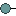
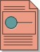

Artifacts >
Artifacts >
 Test Artifact Set >
Test Artifact Set >
 {More Test Artifacts} >
Test Software Design >
{More Test Artifacts} >
Test Software Design >

Test Interface Specification
 Artifacts >
Test Artifact Set >
{More Test Artifacts} >
Test Software Design >
Artifact:
| ||||||||||||||||||||||||||||||||||||||||||
 Test Interface Specification |
A specification for the provision of a set of behaviors (operations) by a classifier (specifically, a Class, Subsystem or Component) for the purposes of test access (testability). Each test Interface should provide an unique and well-defined group of services. |
| UML Representation: | Interface |
| Role: | Test Designer |
| Optionality/ Occurrence: | Required specifically when the execution of software tests cannot be satisfactorily achieved using the standard interfaces provided by the software. This is required especially where aspects of the system that do not normally have external visibility must be observed, or where control of the software is required in a way not normally available through the standard interface. |
| Enclosed in: | Optionally enclosed in the Software Architecture Document, Design Model or the Supplementary Specifications. |
| Templates: | |
| Examples: | |
| Reports: | |
| More Information: | |
| Input to Activities: | Output from Activities: |
The Test Interface Specification provides a means of documenting the special requirements of the test effort that will place constraints or additional requirements on the design of the software. Where aspects of the system that do not normally have visibility must be observed, or where control of the software is required in a way not normally available through the standard interface, this may necessitate that specialized test interfaces be developed.
See Guidelines: Interface for additional information on the purpose and definition of interfaces.
Each Test Interface Specification should consider various aspects including the following:
|
Property Name |
Brief Description |
UML Representation |
| Name | An unique name used to identify this Test Interface Specification. | attribute |
| Description | A short description of the contents of the Test Interface Specification, typically giving some high-level indication of complexity and scope. | attribute |
| Purpose | An explanation of what this Test Interface Specification represents and why it is important. | no UML representation for this property |
| Dependent Test and Evaluation Items | Some form of traceability or dependency mapping to specific elements, such as individual design elements that need to be referenced. | Dependency |
| Operations | The operations that the interface needs to supply, including any requirements for the message signature of each operation . | operations |
The first Test Interface Specifications should be outlined as early as practical, starting with the work involved in Workflow Detail: Perform Architectural Synthesis in the Inception phase. By the end of Elaboration phase, the test interfaces should be specified and agreed to, and the key test interfaces should already be implemented and proven stable.
The Test Designer is the role primarily responsible for this artifact. The responsibilities are split into two main areas of concern:
The primary set of responsibilities covers the following design and definition issues:
The secondary set of responsibilities covers the following management issues:
See the Artifact: Interface for ideas on Interfaces that can be applied to tailoring the Test Interface Specification.
|
Rational Unified
Process
|